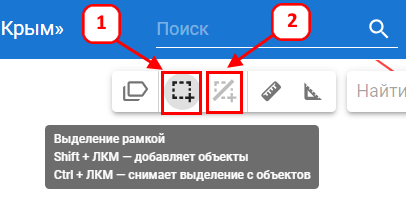

Выбор объектов
Режим позволяет выделять рамкой видимые векторные объекты на карте.
- Нажмите кнопку Выбор объектов (1).

Курсор изменит вид (2), активировав режим выделения рамкой.
- Выделите объекты, обведя их рамкой ЛКМ.
- Для добавления объектов к выделению удерживайте клавишу Shift и используйте ЛКМ.
- Для снятия выделения с объектов удерживайте клавишу Ctrl и используйте ЛКМ.
- Максимальное количество одновременно выделенных объектов — 100.
- В режиме выделения перетаскивание карты выполняйте средней кнопкой мыши.
- Снимите выделение, щелкнув ЛКМ по свободной области карты или дважды нажав клавишу Esc.